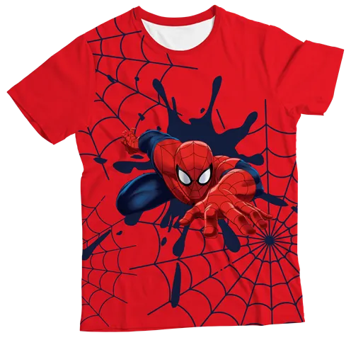

Bem-vindo ao Reino dos Baixinhos!
Encontre os melhores produtos para crianças de todas as idades.
Nossos Produtos
Camiseta Homem Aranha
R$ 70,00
MALHA - A camiseta é confeccionada em malha Flame 200gr. Composição de 96% poliéster e de 4% elastano. Tecidos são de alta qualidade e muito resistentes.
ESTAMPA - A estampa é feita em sublimação. Não sai nem trinca na lavagem, possui alta qualidade e detalhes nos desenhos e cores além, de ser toque zero.
CUIDADOS - Você pode lavar a mão ou na máquina sem alvejante. Passe a ferro tomando cuidado com a temperatura na estampa.
Camiseta Batman

R$ 65,00
TECIDO - 50% Algodão 50% Poliéster.
ESTAMPA - A estampa é feita em sublimação. Não sai nem trinca na lavagem, possui alta qualidade e detalhes nos desenhos e cores além, de ser toque zero.
CUIDADOS - Você pode lavar a mão ou na máquina sem alvejante. Passe a ferro tomando cuidado com a temperatura na estampa.
Bermuda Camuflada

R$ 90,00
TECIDO - Sarja.
CUIDADOS - Você pode lavar a mão ou na máquina sem alvejante. Passe a ferro tomando cuidado com a temperatura na estampa.